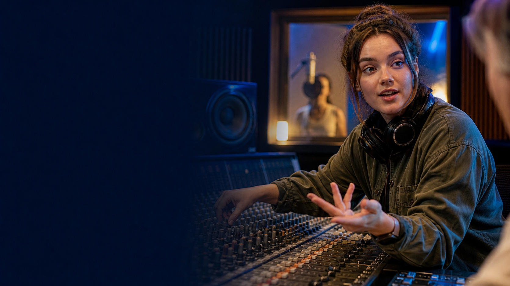
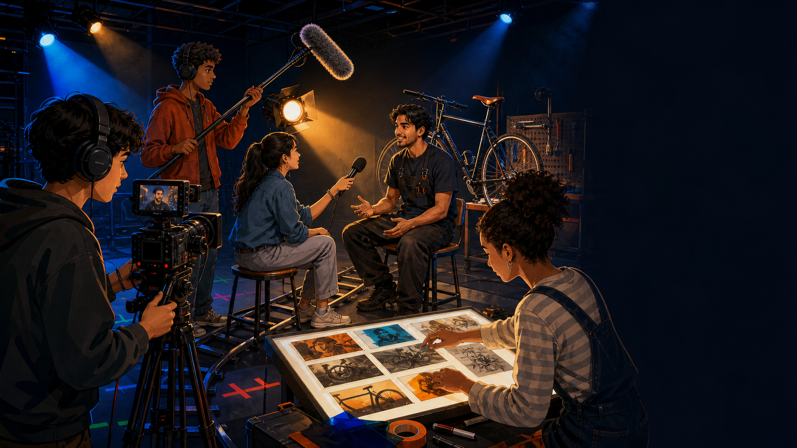

checks plants - solves growing problems - works outdoors
listens carefully - records sound - works with performers
repairs parts - tests the bike - notices small problems
Comprehension
Use evidence, not guesses.
Tap a statement, then choose true, false or not shown.
Sequence
Can you rebuild the moving story?
Tap the cards in story order.
Language noticing
A clear job description needs four lights.
Job
A sound engineer...
Workplace
works in a studio.
Responsibility
They record and improve sound.
Reason
This matters because people need clear audio.
A / An job works place. They action. They need skill because...
Useful language
Choose the phrase that matches the meaning.
needs to = important for the job
has to = required duty or rule
is good at = an ability
Who?
Phrase?
What?
Choose one piece from each column.
Controlled practice
Keep the job, duty and skill in focus.
Tap every correct sentence. Explain one choice.
Common mistakes
Fix each line before the next frame.

Listening interview
"I listen for what other people miss."
First listen: What does Nara enjoy? Second listen: Which skills does she mention?
I work in a small recording studio. I have to prepare the microphones before each session. During a recording, I listen carefully and solve sound problems. I need to communicate with singers because they cannot always hear what I hear. I enjoy the moment when many small choices become one clear song.
Listening comprehension
Which details did Nara put in the spotlight?
Answer first. Then reveal the evidence.
Information gap
Ask questions until the hidden work becomes visible.
Student A
workplaceoutdoors and in nature
responsibility
skillspatience + attention to detail
Student B
workplace
responsibilityrepairs and tests bicycles
skills
Ask: "Do you work...?" "Do you have to...?" "Do you need to be good at...?"

Final production
Pitch a 60-second documentary.
04:00
Include: workplace + two responsibilities + two skills + why the job matters.
Choose a real job, an imagined future job or a fictional character's work.
Review quiz
Earn your place in the credits.
1. Who gives emergency medical help?
2. Which follows "good at"?
3. Which is a duty?
4. Main film idea?
CREDIT SCORE
0 / 4
DIRECTOR curiosity
CAMERA attention to detail
SOUND communication
PRODUCTION teamwork
STORY problem solving
STARRING your ideas
Homework + exit
Notice one job that usually stays off camera.
Find
a job in a safe real place, film, game or book
Describe
workplace + two responsibilities
Explain
two skills and why the work matters
Optional
draw one documentary frame
Tap what is true. Then share one line from your own future documentary.
Next: Second Conditional - Dreams and Hypothetical Situations.